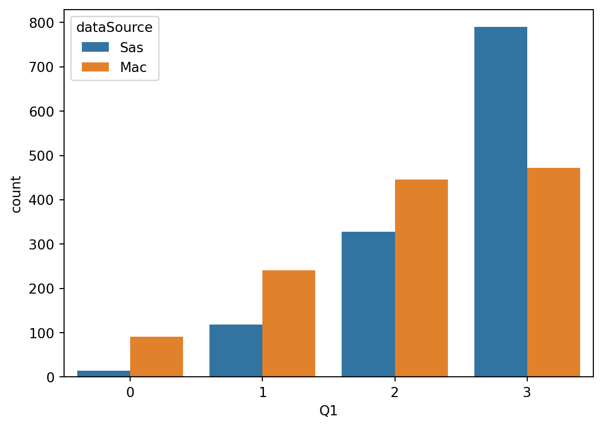
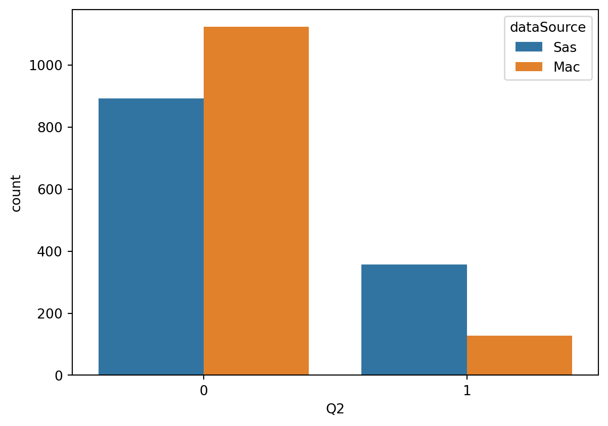
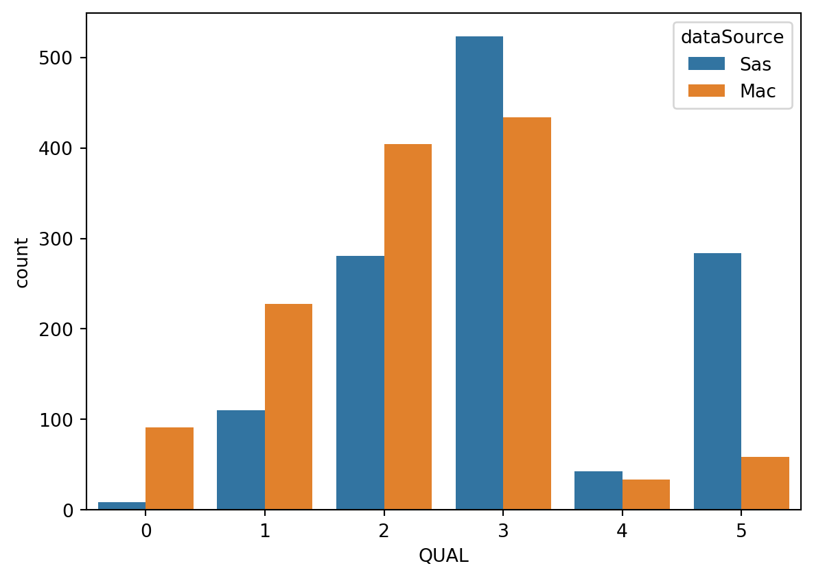

We analyzed 2500 evaluations, with 1250 from Site 1 (McMaster) and 1250 from Site 2 (Saskatchewan).
NLP-QuAL Results
Data Characteristics/Demographics
For each evaluation, the QuAL score was rated by two separate raters. Each sub-score (Q1, Q2, and Q3) was rated and then summed to get the final QuAL score. Discrepancies were broken by members of the study team (who?)
The average QuAL score was 2.6408, with standard deviation 1.275, median 3.0
Descriptive statistics for the subscores and QuAL Score were:
| Q1 | Q2 | Q3 | QUAL | |
|---|---|---|---|---|
| count | 2500.000000 | 2500.000000 | 2500.000000 | 2500.000000 |
| mean | 2.277200 | 0.193600 | 0.170000 | 2.640800 |
| std | 0.860149 | 0.395198 | 0.375708 | 1.275157 |
| 50% | 3.000000 | 0.000000 | 0.000000 | 3.000000 |
Score Distributions
Subscores
The table below shows the count and associated percent for each level of each subscore.
| Q1 | Q2 | Q3 | ||||
|---|---|---|---|---|---|---|
| Count | Percent of Total | Count | Percent of Total | Count | Percent of Total | |
| 0 | 105 | 4.20 | 2016.0 | 80.64 | 2075.0 | 83.0 |
| 1 | 359 | 14.36 | 484.0 | 19.36 | 425.0 | 17.0 |
| 2 | 774 | 30.96 | NaN | NaN | NaN | NaN |
| 3 | 1262 | 50.48 | NaN | NaN | NaN | NaN |
The distribution for the subscores is plotted below


Distribution of QuAL Subscores
Evaluations tended to score highly (> 2) on Q1, but poorly (80% 0 and 83% 0, respectively) on Q2 and Q3. There were large differences in scores between the two sites.
QuAL Score
The table below shows the raw counts and percentages associated with each level of the rated QuAL score.
| Count | Percent of Total | |
|---|---|---|
| 0 | 100 | 4.00 |
| 1 | 338 | 13.52 |
| 2 | 685 | 27.40 |
| 3 | 957 | 38.28 |
| 4 | 77 | 3.08 |
| 5 | 343 | 13.72 |
The distribution of the QuAL score is plotted below:

This table shows the counts/frequencies for each possible combination of subscores. For each possible final QuAL score, the table shows the combination fo subscores most likely to generate that QuAL score.
| Count | Percent of Total | ||||
|---|---|---|---|---|---|
| QUAL | Q1 | Q2 | Q3 | ||
| 0 | 0 | 0 | 0 | 100 | 4.00 |
| 1 | 0 | 1 | 0 | 5 | 0.20 |
| 1 | 0 | 0 | 333 | 13.32 | |
| 2 | 1 | 0 | 1 | 1 | 0.04 |
| 1 | 0 | 21 | 0.84 | ||
| 2 | 0 | 0 | 663 | 26.52 | |
| 3 | 1 | 1 | 1 | 4 | 0.16 |
| 2 | 0 | 1 | 2 | 0.08 | |
| 1 | 0 | 41 | 1.64 | ||
| 3 | 0 | 0 | 910 | 36.40 | |
| 4 | 2 | 1 | 1 | 68 | 2.72 |
| 3 | 0 | 1 | 7 | 0.28 | |
| 1 | 0 | 2 | 0.08 | ||
| 5 | 3 | 1 | 1 | 343 | 13.72 |
This table yields some interesting insights. The QuAL score subscores are dependent on one another. Based on the structure of the subscores, it follows that if the evaluation is not detailed enough (Q1 \(\leq\) 2), it’s unlikely to contain a suggestion for improvement (Q1 = 0), and there can be no linking between behavior and improvement (Q3 = 0). The table backs this up, with the vast majority of Q2 and Q3 rated as zero if Q1 \(\leq\) 2. If the evaluation is highly detailed (Q3 = 3), then naturally it is more likely to have a suggestion for improvement (Q2 = 1), and based on the table, it’s also likely to link the suggestion to the behavior (Q3 = 1). Q3 is essentially redundant; Q3 is discrepant from Q3 in only 3.1% of all evaluations.
This means that the QuAL score can be reduced to three primary outcomes:
- Q1 \(\leq\) 2 - low detail, very unlikely (<10%) to contain suggestion for improvement
- Q1 = 3; Q2 and Q3 = 0 - high detail, no suggestion for improvement
- Q1 = 3; Q2 and Q3 = 1 - high detail, with suggestion for improvement, extremely likely to have connection between behavior/suggestion
These three scenarios fit 2,349/2,500 = 94% of evaluations. This provides an opportunity to condense the QuAL score from 6 levels (0-5) to 3. Although the remainder of the results below do not condense the QuAL score, this could be a good way to boost accuracy results in a way that does not compromise the integrity of the score itself.
Interrater Reliability
This table shows the percent agreement for the QUAL score and each subscore
| Q1Match | Q2Match | Q3Match | QUALMatch | |||||
|---|---|---|---|---|---|---|---|---|
| Count | Percent of Total | Count | Percent of Total | Count | Percent of Total | Count | Percent of Total | |
| False | 1059 | 42.36 | 188 | 7.52 | 606 | 24.24 | 1426 | 57.04 |
| True | 1441 | 57.64 | 2312 | 92.48 | 1894 | 75.76 | 1074 | 42.96 |
| Cohen's Kappa | |
|---|---|
| Q1 | 0.387601 |
| Q2 | 0.751249 |
| Q3 | 0.351520 |
| QuAL | 0.317628 |
Cohen’s Kappas were calculated and are presented above. There was fair agreement for all scores except for Q1, which had substantial agreement. This was before any tiebreaking/discrepancy correction.
Other Demographics and Descriptive Statistics
These may or may not be relevant.
| GenderRes | GenderFac | |||
|---|---|---|---|---|
| Count | Percent of Total | Count | Percent of Total | |
| Female | 1037.0 | 41.48 | 877 | 35.08 |
| Male | 1463.0 | 58.52 | 1447 | 57.88 |
| Unknown | NaN | NaN | 176 | 7.04 |
ObserverType stratifies the evaluator by role.
| ObserverType | ||
|---|---|---|
| Count | Percent of Total | |
| clinical supervisor | 1200 | 48.0 |
| faculty | 1165 | 46.6 |
| resident | 135 | 5.4 |
Only one of the two sites reports PGY levels for their trainees on their evaluations.
| PGY | |
|---|---|
| Unknown | 1251 |
| 2 | 510 |
| 1 | 456 |
| 3 | 157 |
| 4 | 117 |
| 5 | 9 |